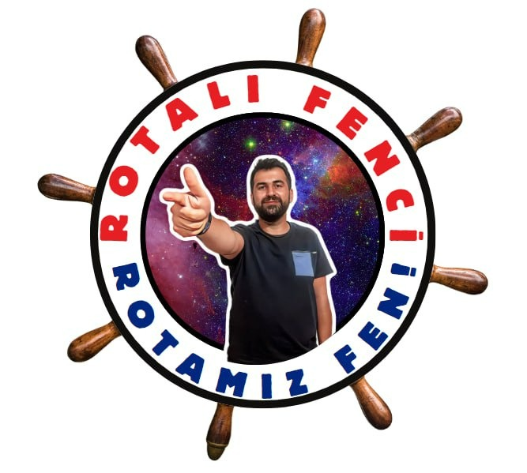

🎯 1. Kazanım ve Soru Ayarları
Adım 1
0 Test

MEB Müfredatına Dayalı Görsel ve Şekilli Akıllı Soru Üretim Sistemi (Z-Kitap & A4 Baskı)
Sol taraftaki panelden bir ünite seçip Hedef Öğrenme Çıktılarını işaretleyebilir veya Word (.docx), PDF (.pdf), Görsel (.png, .jpg) kaynak dosyanızı sürükleyip bırakabilirsiniz. Ayrıca eğitim içeriklerini ve üretilen soruları 🌌 3D Uzay Sunum Modu ile akıllı tahtada dikey akışla görüntüleyebilirsiniz.